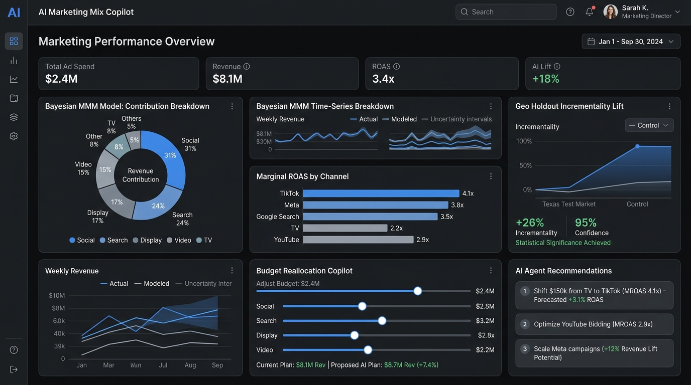

ConversionBridge - Privacy-First Server-Side Conversion Tracking Gateway
Open-source Python and Firebase gateway for collecting consent-aware first-party conversion events and dispatching them to Meta Conversions API and Google Analytics 4.
Open-source release v1.0.0 with 38 passing unit tests and GitHub Actions CI.
Discuss This Project on WhatsAppOverview
ConversionBridge is a production-grade conversion tracking gateway designed to combat the signal loss caused by iOS App Tracking Transparency (ATT), ad-blockers, and third-party cookie phaseouts. By capturing conversions on your first-party backend and forwarding them directly to Meta Conversions API (Graph API v20.0) and Google Analytics 4 (Measurement Protocol), ConversionBridge recovers lost conversion data, improves ad algorithm optimization, and preserves strict compliance with user privacy choices.
Built with Python 3.11/3.12 and FastAPI, it features a dual runtime supporting both traditional containerized deployments (Docker/Cloud Run) and serverless execution on Firebase Cloud Functions v2.
Problem It Solves
Browser-only tracking pixels regularly lose 15% to 30% of conversions because users close confirmation tabs, run network ad-blockers, or use privacy-focused browsers that restrict client-side scripts. Furthermore, client-side scripts risk exposing proprietary access tokens and often send unhashed PII into external networks.
Target Users
- Performance Marketing Agencies managing Meta & Google Ads at scale
- E-Commerce Brands (Shopify, WooCommerce, Custom Storefronts) recovering dropped purchase events
- Lead-Generation Businesses requiring resilient CRM offline conversion sync
- SaaS Platforms tracking trial signups and subscription renewals server-side
Key Features
- Multi-Channel Server-to-Server Dispatch: Accepts a single unified event payload and concurrently dispatches to Meta CAPI and GA4 Measurement Protocol.
- Fail-Closed Consent Engine: Separates advertising and analytics consent. Events without explicit consent are blocked before outbound network transmission.
- Automated SHA-256 PII Normalization: Strips whitespace, standardizes casing, and hashes customer emails, phones, and addresses per platform specifications without double-hashing pre-hashed inputs.
- 48-Hour Deduplication Window: Uses namespaced keys in Firestore or in-memory storage to prevent accidental duplicate retries while preserving cross-channel delivery.
- Dry-Run Test Endpoint: Dedicated
POST /api/v1/events/testroute verifies event payloads, schema compliance, and consent rules with redacted wire-format previews without sending live data. - Multi-Layer Security Perimeter: API key and Bearer token authentication, sliding-window rate limiting (120 req/min), body size limits (512 KB), and automated secret redaction.
- 100% CI Test Coverage: 38 automated unit and integration tests passing across Python 3.11 and 3.12 on GitHub Actions.
Technologies
- Python 3.11 / 3.12
- FastAPI
- Firebase Cloud Functions v2
- Google Cloud Firestore
- Meta Conversions API (Graph API v20.0)
- GA4 Measurement Protocol
- HTTPX Async
- Pytest & Ruff
Contribution & Skills
Sole architect and developer. Engineered the complete FastAPI gateway, Meta CAPI adapter, GA4 Measurement Protocol integration, fail-closed consent engine, Firestore deduplication backend, and the 38-test automated suite.
Install & Usage
Clone & Install
git clone https://github.com/hamid-digitalmarketer/conversionbridge.git
cd conversionbridge
pip install -r requirements-dev.txtRun Local Server
cp .env.example .env
python -m uvicorn app.main:app --port 8080 --reloadSubmit a Test Event
curl -X POST http://localhost:8080/api/v1/events/test \
-H "Content-Type: application/json" \
-d @examples/sample_event.jsonFAQ
How does ConversionBridge handle user privacy and consent?
ConversionBridge operates on a fail-closed privacy policy. Outbound events to Meta require explicit advertising consent, while GA4 requires analytics consent. If consent is absent or denied, events are blocked before transmission.
How does event deduplication prevent double-counting between browser pixels and server events?
ConversionBridge enforces identical event_id and event_name identifiers across browser and server payloads, allowing Meta and Google to merge matching events within a 48-hour deduplication window.
Related Projects

Analytics & Trackingconversion-tracking-doctor
Diagnose broken conversion tracking and data quality across GA4, Ads and Meta CAPI.
 Meta Ads
Meta Adsmeta-lead-quality-analyzer
Score Meta lead quality and feed offline conversions back to the algorithm.
 Google Ads & PPC
Google Ads & PPCppc-waste-detector
Find wasted ad spend: query bleed, cannibalization, junk placements and click fraud.
Need Server-Side Tracking for Your Business?
I build custom first-party conversion tracking gateways, Meta CAPI setups, and resilient measurement architectures. Start the conversation on WhatsApp.
Contact Me on WhatsApp